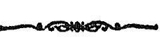

PUBLISHED UNDER THE AUTHORITY OF THE
GOVERNMENT OF HIS HIGHNESS MAHARAJA
SIP HARISINGH BAHADUR,
K. C. I. E., K. C. V. O.,
MAHĀRĀJĀ OF JAMMU AND KASHMIR STATE.
KASHMIR SERIES OF TEXTS
AND STUDIES.
No. XLVII,
THE
TANTRĀLOKA
OF
ABHINAVA-GUPTA.
WITH COMMENTARY
BY
RĀJĀNAKA JAYARATHA.
________________
EDITED BY
PANDIT MADHUSUDAN KAUL SHASTRĪ, M. A., M. O. L.,
VIDYĀVĀRIDHI, SUPERINTENDENT, RESEARCH
DEPARTMENT, JAMMU AND KASHMIR
STATE, SRINAGAR.

PUBLISHED UNDER THE AUTHORITY OF THE
GOVERNMENT OF HIS HIGHNESS MAHARAJA
SIP HARISINGH BAHADUR,
K. C. I. E., K. C. V. O.,
MAHĀRĀJĀ OF JAMMU AND KASHMIR STATE.

Volume VIII.
Ahnikas 13th and 14th.
BOMBAY :
PRINTED AT THE ”TATTVA-VIVEOHAA" PRESS.
1926.
Hari Parshad Das (HPD)